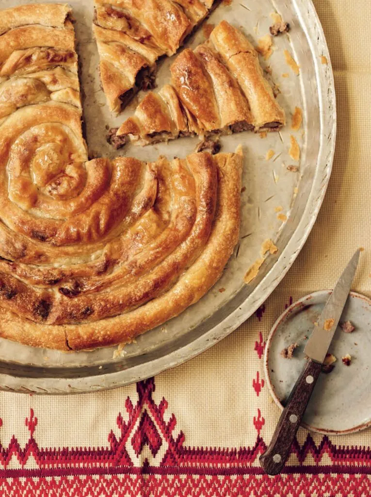

Home
Burek

Description
Burek is a traditional Balkan pastry made with thin, flaky layers of dough filled with savory ingredients such as minced meat, cheese, or potatoes. It is baked until golden and crispy on the outside while staying soft and flavorful inside. Known for its rich taste and satisfying texture, burek is commonly enjoyed as a breakfast, snack, or quick meal, often served with yogurt or sour cream.
ingredients
100 ml sparkling water or regular water
50 ml oil or melted butter for brushing the dough
Steps
Preheat the oven to 200°C and finely chop the onion. Cook it in oil for a few minutes, then add the ground beef, salt, and pepper. Cook until the meat is browned.
Lay out the phyllo dough and lightly brush each layer with oil or melted butter. Add some of the meat filling and roll the dough into long strips or spirals.
Place the burek into a greased baking tray and bake for about 30–40 minutes until golden brown and crispy.
Let it cool slightly before serving, and enjoy with yogurt or sour cream if desired.